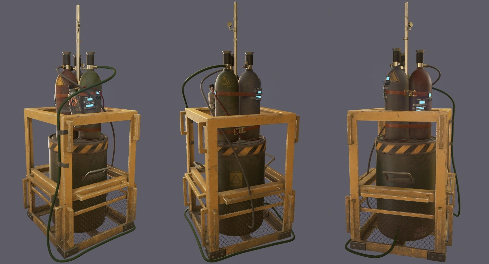
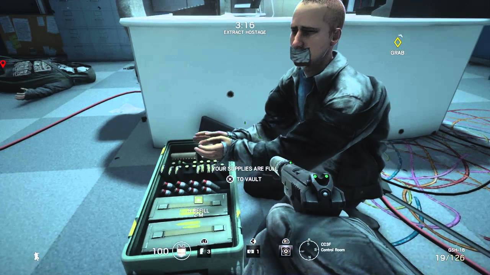

Wat houdt de game Rainbow six siege in?
Rainbow six siege is een shooter waarbij je als team moet samenwerken. Je moet hierbij ook zeer tactisch zijn, want tijdens de voorbereidings fase(of in het Engels prepfase) kunnen de defenders vallen plaatsen waardoor jij en je teammates in lastige situaties kunnen komen. In dit spel kan je als een attacker (aanvaller) of als een defender (verdediger) spelen.hieronder heb ik een paar belangrijke woorden of termen uitgelegd.
Prepfase
De prepfase is een kleine ronde die maar 30 seconden duurt. Tijdens deze fase leggen de defenders hun vallen klaar en beveiligen ze de hostage of de bom goed. Tijdens deze ronde kunnen de attackers met bestuurbare robotjes het gebouw betreden. Met deze robotjes kunnen ze vijanden zien, maar de bom of de hostage ook. Ook kunnen de vallen zien.Attackers
Als je als een attacker speelt, moet je met je team goede tactieken bedenken om bijvoorbeeld een huis binnen te vallen, jouw doel is om samen met je team een bom te stoppen of een gegijzelde te bevrijden.Defenders
Als je als defender speelt is het jouw doel om met jouw team de bom of de gegijzelde te beschermen. Dit kan je doen doordat je de attackers doodt of de hostage heel goed verstopt.Duur potje
Een potje bestaat maximaal uit 5 rondes, soms heb je genoeg aan 3 rondes. Tijdens een potje is het uiteindelijke doel om te winnen en dat doe je door middel van punten te behalen, die zogenoemde punten haal je door rondes te winnen. Je wint een potje als je 3 rondes oftewel 3 punten hebt gewonnen.De bom

De bom moet je als defender zijnde beschermen tegen de attackers, want doe je dit niet dan kan dat ervoor zorgen dat je een ronde verliest. De attackers kunnen een ronde winnen als ze alle defenders doden of de defuser (een kofferrtje dat de bom kan stoppen) planten.De hostage

Net als bij de bom moeten de defenders de hostage oftwel de gegijzelde beschermen. De attackers kunnen een ronde winnen als ze de hostage veilig naar buiten begeleiden of als ze alle defenders doden.